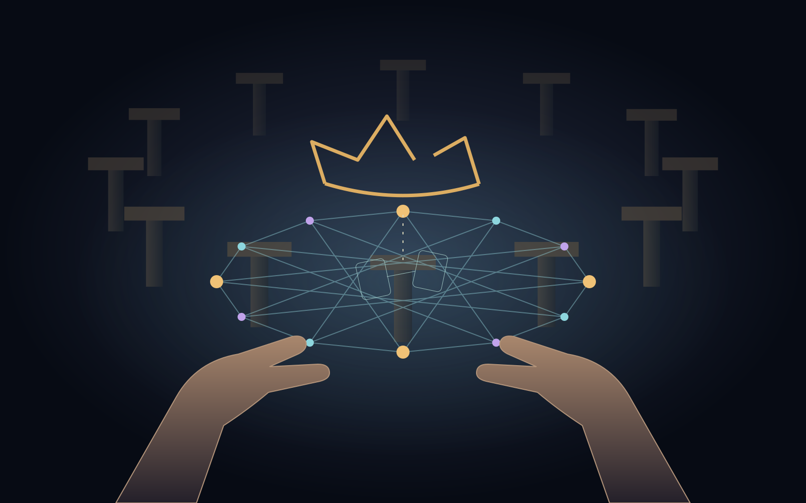

HUMAN-CENTERED UNIVERSE · HUM-0009
Language
English
Türkçe
Experimental scene · this session only
I open the objection

Loading the scene…
This scene requires JavaScript. The story remains available in the repository.